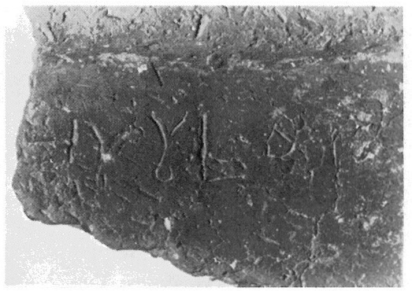
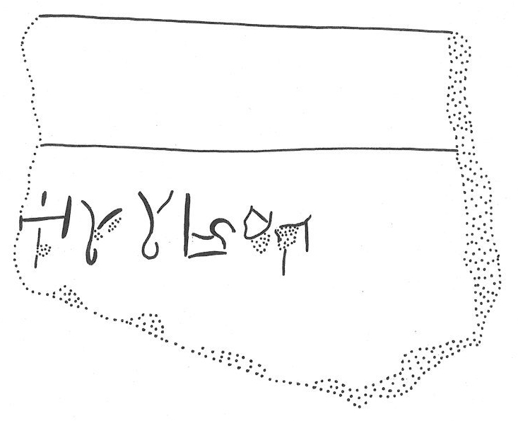

-
IOZb10
Names
IOZb10, IO Zb 10
Support
Clay vessel
Location
Iouktas
Findspot
Unavailable


Scribe
Unavailable
Context
Late Minoan I
1600-1450 BCE
Dimensions
Catalogue
Readings
1 1 0 A none
1 1 0 SA none
1 1 0 SA none
1 1 0 RA none
1 1 0 ME none
𐘇𐘞𐘞𐘴𐘋
ASASARAME
𐘇𐘞𐘞𐘴𐘋
ASASARAME
IO Zb 10
(HM 22037) (GORILA V: 34-35), square Libation
Table, terracotta
(terrace III, MM III-LM I context)
]A-SA-SA-RA-ME
on analogy with PO Zc 1, JGY
hypothesizes that the last syllable of the word before
A-SA-SA-RA-ME ended in -I.
Commentary © John Younger
References
papers/GORILA-Vol5.pdf#page=87